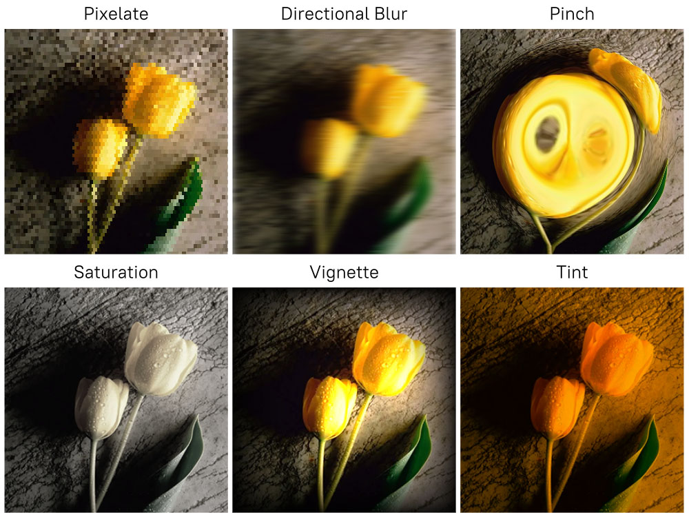
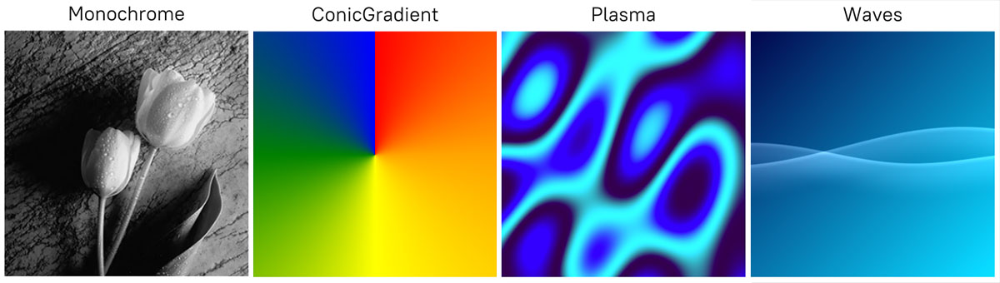

Extending with Shaders
There are two ways where custom shaders can be used in NoesisGUI. Effects apply a post-processing shader to any object including children. On the other hand, Brushes can be customized with a shader to define how elements are filled and stroked. The following sections describe both approaches in more detail.
In both cases, a pixel shader compatible with the active RenderDevice is required. Our Application Framework provides a ShaderCompiler tool that is used in C++ and Unity. For Unreal, the native Shader Graph editor must be used.
Shader Effects
NoesisGUI has two special visual effects built in that can be applied to any Visual. These effects are DropShadowEffect and BlurEffect, which both derive from the abstract Effect class.
To apply an effect to a relevant object, you simply sets its Effect property to an instance of one of the Effect-derived classes. For example:
<Grid
xmlns="http://schemas.microsoft.com/winfx/2006/xaml/presentation"
xmlns:x="http://schemas.microsoft.com/winfx/2006/xaml">
<Image Width="300" Height="300" Source="Images/image.jpg">
<Image.Effect>
<BlurEffect Radius="20"/>
</Image.Effect>
</Image>
</Grid>
The exciting part is not necessarily the two built-in ones but a third Effect subclass called ShaderEffect that enables you to easily inject your own custom effects. By deriving from the abstract ShaderEffect class, you can apply any pixel shader to any UIElement of the tree.
There are many steps necessary to create a working shader effect class. To ease the development of custom shaders, the Application Framework provides the following effects, we recommend inspecting the source code of these effects while reading this tutorial:
Creating Custom Effects
ShaderEffect is the abstract class that serves as a base for your custom effect class. It is a dependency object, so you can populate it with dependency properties to define the parameters of your effect. As described above, it works in conjunction with a pixel shader.
For example, the PixelateEffect uses the following shader:
#include "EffectHelpers.h"
uniforms
{
float _size;
};
fixed4 main_effect()
{
float2 pos = GetImagePosition();
if (mod(floor(pos.y / _size), 2.0) >= 1.0)
{
pos.x += _size / 2.0f;
}
float2 brickNum = floor(pos / _size);
float2 centerOfBrick = brickNum * _size + _size / 2.0;
return SampleInputAtPosition(centerOfBrick);
}
The following inputs are exposed to the pixel shader in form of functions by using the EffectHelpers.h include:
- GetInputCoordinate(), returns the current input coordinate. As the effect may be generated inside an texture atlas, shaders shouldn't take any dependencies on how this value is calculated. It should use it only to the pixel shader's input. For rest of cases GetNormalizedInputCoordinate is recommended.
- GetNormalizedInputCoordinate(), returns the current normalized input coordinates in the range 0 to 1.
- GetImagePosition(), returns the current image position in pixels.
- GetOpacity(), returns the current opacity.
- GetInput(), returns the color at the current input coordinates.
- SampleInput(), samples input at position uv.
- SampleInputAtOffset(), samples input at an offset in pixels from the input coordinate.
- SampleInputAtPosition(), samples input at an absolute scene position in pixels.
Once the pixel shader is loaded it must be stored in the ShaderEffect instance calling SetPixelShader. Note that only one shader must be loaded for all instances of the same effect. Parametrized effects use a constant buffer to send parameters to the pixel shader. The constant buffer is set in the constructor of the effect by calling SetConstantBuffer and every time a parameter changes the constant buffer must be updated with the function InvalidateConstantBuffer.
PixelateEffect::PixelateEffect()
{
RenderContext::EnsureShaders(Shaders, "Pixelate", Pixelate_bin);
SetPixelShader(Shaders.shaders[0]);
SetConstantBuffer(&mConstants, sizeof(mConstants));
}
NS_IMPLEMENT_REFLECTION(PixelateEffect, "NoesisGUIExtensions.PixelateEffect")
{
auto OnBrickSizeChanged = [](DependencyObject* o, const DependencyPropertyChangedEventArgs& args)
{
PixelateEffect* this_ = (PixelateEffect*)o;
this_->mConstants.size = args.NewValue<float>();
this_->InvalidateConstantBuffer();
};
UIElementData* data = NsMeta<UIElementData>(TypeOf<SelfClass>());
data->RegisterProperty<float>(SizeProperty, "Size", UIPropertyMetadata::Create(
5.0f, PropertyChangedCallback(OnBrickSizeChanged)));
}
An effect is normally applied to an element's actual render size. Therefore an effect for a 200×200 Image will modify pixels in a 200×200 region. Certain effects, like the drop shadow, need additional space outside the normal render area. Use the ShaderEffect SetPadding function to increase the size required in the pixel shader.
Shader Brushes
Apart from Effects, NoesisGUI provides functionality that allows ImageBrush to be extended by using pixel shaders. By deriving from the abstract BrushShader class, you can generate procedural pattern brushes driven by a pixel shader.
In comparison with ShaderEffect, a brush shader is more efficient because it doesn't need an extra render pass to an offscreen. But on the other hand, it cannot be applied to a tree of elements.
To apply a shader brush to an ImageBrush, you set its Brush.Shader property. Note that this is an Extension to WPF provided by NoesisGUI.
<Grid
xmlns="http://schemas.microsoft.com/winfx/2006/xaml/presentation"
xmlns:noesis="clr-namespace:NoesisGUIExtensions;assembly=Noesis.GUI.Extensions"
xmlns:local="clr-namespace:CustomBrushes">
<Rectangle Width="300" Height="300">
<Rectangle.Fill>
<ImageBrush ImageSource="Images/image.jpg">
<noesis:Brush.Shader>
<local:WaveBrush Frequency="0.7" />
</noesis:Brush.Shader>
</ImageBrush>
</Rectangle.Fill>
</Rectangle>
</Grid>
The Application Framework provides the following shader brushes as examples:
Creating Shader Brushes
BrushShader is the abstract class that serves as a base for your custom brush. It is a dependency object, so you can populate it with dependency properties to configure your shader. Same as in ShaderEffect, this class works in conjunction with a pixel shader.
For example, the MonochromeBrush uses the following shader:
#include "BrushHelpers.h"
uniforms
{
fixed4 _color;
};
fixed4 main_brush(float2 uv)
{
fixed4 c = SampleImage(uv);
fixed l = c.r * 0.30 + c.g * 0.59 + c.b * 0.11;
return float4(_color.r * l, _color.g * l, _color.b * l, c.a);
}
In contrast with ShaderEffect, now we are using 'BrushHelpers.h' to get a different set of helper functions. For example, SampleImage() is used to sample the texture corresponding to the ImageBrush.
Once the pixel shader is loaded it must be stored in the BrushShader instance calling SetPixelShader for each target. For example, different shader variants are needed if the brush is applied to a text or a path. Note that only one shader must be loaded for all instances of the same effect. Parametrized effects use a constant buffer to send parameters to the pixel shader. The constant buffer is set in the constructor of the shader brush by calling SetConstantBuffer and every time a parameter changes the constant buffer must be updated with the function InvalidateConstantBuffer.
MonochromeBrush::MonochromeBrush()
{
RenderContext::EnsureShaders(Shaders, "Monochrome", Monochrome_bin);
SetConstantBuffer(&mConstants, sizeof(mConstants));
for (uint32_t i = 0; i < NS_COUNTOF(Shaders.shaders); i++)
{
SetPixelShader(Shaders.shaders[i], (BrushShader::Target)i);
}
}
NS_IMPLEMENT_REFLECTION(MonochromeBrush, "NoesisGUIExtensions.MonochromeBrush")
{
auto OnColorChanged = [](DependencyObject* o, const DependencyPropertyChangedEventArgs& args)
{
MonochromeBrush* this_ = (MonochromeBrush*)o;
this_->mConstants.color = args.NewValue<Color>();
this_->InvalidateConstantBuffer();
};
UIElementData* data = NsMeta<UIElementData>(TypeOf<SelfClass>());
data->RegisterProperty<Color>(ColorProperty, "Color",
UIPropertyMetadata::Create(Color::White(), PropertyChangedCallback(OnColorChanged)));
}
Table of Contents